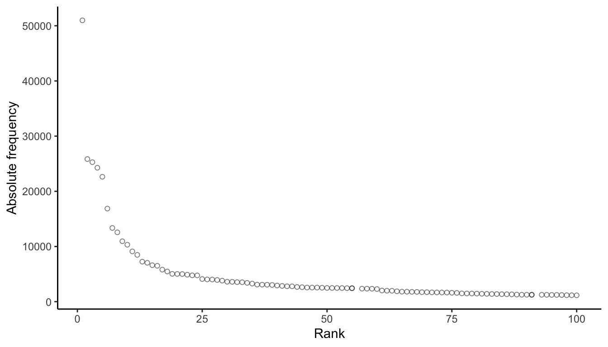
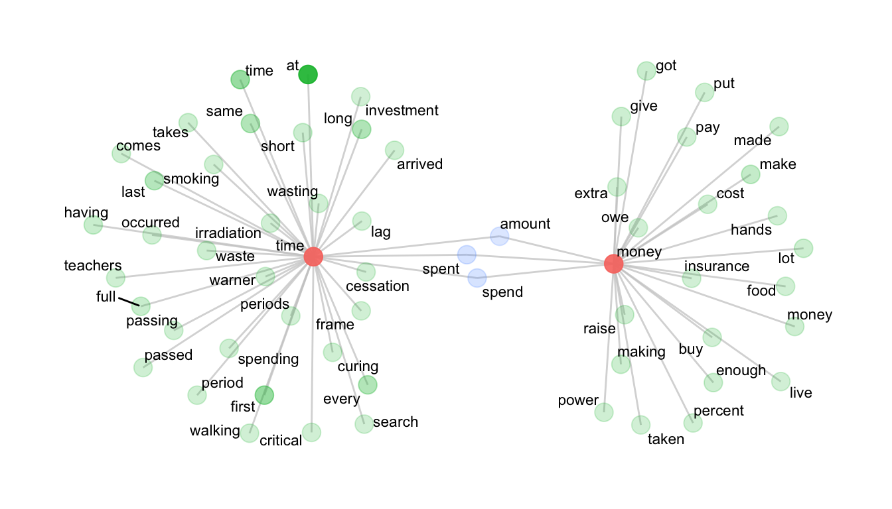
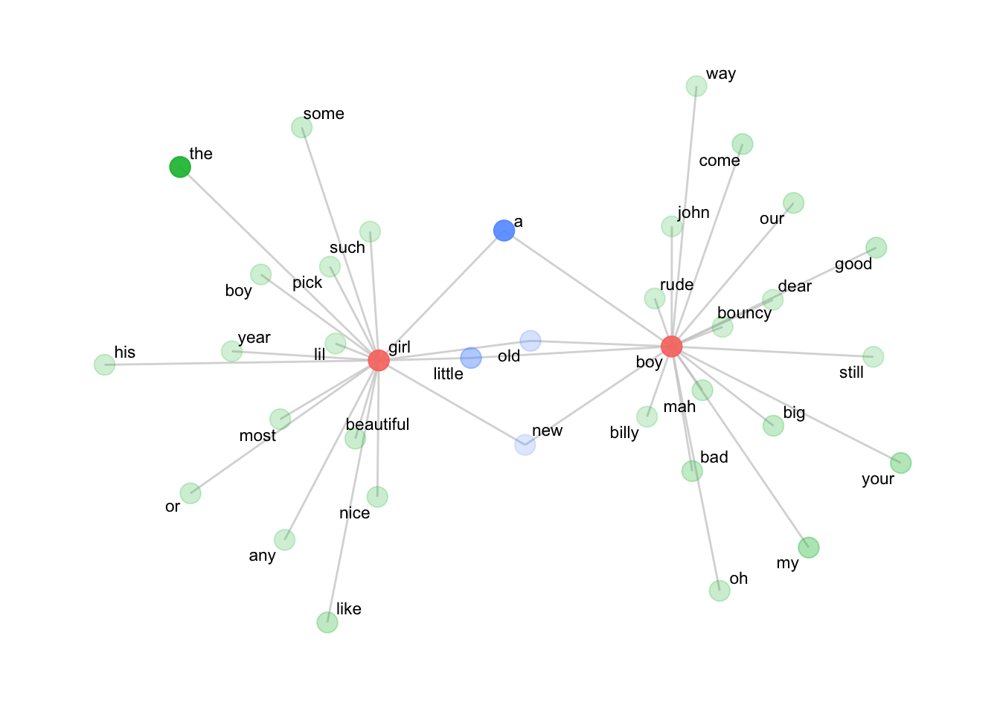

library(tidyverse)
library(quanteda)
library(quanteda.textstats)11 Lab Set 2
Note
The preview of this lab set is rendered in HTML. However, all assignments must be rendered in PDF for submission on Canvas. The the textstat_tools repository is already set up to do this for you. Be sure to follow the directions including the installation of tinytex.
11.1 Distributions
11.1.1 Task 1
load("../data/sample_corpus.rda")
source("../R/dispersion_functions.R")sc_tokens <- sample_corpus %>%
corpus() %>%
tokens(remove_punct = TRUE, remove_numbers = TRUE, remove_symbols = TRUE, what = "word") %>%
tokens_tolower()
sc_dfm <- sc_tokens %>%
dfm()
sc_freq <- sc_dfm %>%
textstat_frequency() %>%
mutate(RF = (frequency/sum(frequency))*1000000)Plot a histogram (or histograms) for the the 1st, 10th, and 100th most frequent tokens in the sample corpus.
# your code goes hereWhat do you notice (or what conclusions can you draw) from the plots you’ve generated about the distributions of tokens as their frequency decreases?
Your response
11.1.2 Task 2
the <- dispersions_token(sc_dfm, "the") %>% unlist()
data <- dispersions_token(sc_dfm, "data") %>% unlist()the['Deviation of proportions DP']Deviation of proportions DP
0.1388907 data['Deviation of proportions DP']Deviation of proportions DP
0.845857 What do you note about the difference in the Deviation of Proportions for the vs. data?
Your response
11.1.3 Task 3
sc_ft <- frequency_table(sc_tokens)Which token is the most frequent? The most dispersed?
Your response
Write a sentence or two reporting the frequencies and dispersions of the and data fowling the examples on page 53 of Brezina:
Your response
ggplot(sc_freq %>% filter(rank < 101), aes(x = rank, y = frequency)) +
geom_point(shape = 1, alpha = .5) +
theme_classic() +
ylab("Absolute frequency") +
xlab("Rank")
The relationship you’re seeing between the rank of a token and it’s frequency holds true for almost any corpus and is referred to as Zipf’s Law (see Brezina pg. 44).
11.1.4 Task 4
Describe at least one statistical and one methodological implication of what the plot is illustrating.
Your response
11.2 Collocations and association measures
11.2.1 Task 1
library(tidyverse)
library(quanteda)
library(quanteda.textstats)source("../R/helper_functions.R")
source("../R/utility_functions.R")
source("../R/collocation_functions.R")sc_tokens <- sample_corpus %>%
mutate(text = preprocess_text(text)) %>%
corpus() %>%
tokens(what="fastestword", remove_numbers=TRUE)money_collocations <- collocates_by_MI(sc_tokens, "money")
time_collocations <- collocates_by_MI(sc_tokens, "time")Report the collocations of time and money in 2 or 3 sentences following the conventions described in Brezina (pg. 75).
Your response
11.2.2 Task 2
tc <- time_collocations %>% filter(col_freq >= 5 & MI_1 >= 5)
mc <- money_collocations %>% filter(col_freq >= 5 & MI_1 >= 5)
net <- col_network(tc, mc)library(ggraph)ggraph(net, weight = link_weight, layout = "stress") +
geom_edge_link(color = "gray80", alpha = .75) +
geom_node_point(aes(alpha = node_weight, size = 3, color = n_intersects)) +
geom_node_text(aes(label = label), repel = T, size = 3) +
scale_alpha(range = c(0.2, 0.9)) +
theme_graph() +
theme(legend.position="none")
Write a 2-4 sentence interpretation of the time vs. money collocational network.
Your response
11.2.3 Task 3
Load the down-sampled screenplays, extract the dialogue, and tokenize the data.
load("../data/screenplays.rda")
sp <- from_play(sp, extract = "dialogue")
sp <- sp %>%
mutate(text = preprocess_text(text)) %>%
corpus() %>%
tokens(what="fastestword", remove_numbers=TRUE)b <- collocates_by_MI(sp, "boy", left = 3, right = 0)
b <- b %>% filter(col_freq >= 3 & MI_1 >= 3)
g <- collocates_by_MI(sp, "girl", left = 3, right = 0)
g <- g %>% filter(col_freq >= 3 & MI_1 >= 3)11.2.3.1 Plot the network
net <- col_network(b, g)
ggraph(net, weight = link_weight, layout = "stress") +
geom_edge_link(color = "gray80", alpha = .75) +
geom_node_point(aes(alpha = node_weight, size = 3, color = n_intersects)) +
geom_node_text(aes(label = label), repel = T, size = 3) +
scale_alpha(range = c(0.2, 0.9)) +
theme_graph() +
theme(legend.position="none")
Write a 3-5 sentence interpretation of the boy vs. girl collocational network, which includes reporting relevant association measures following the example in Brezina (pg. 75).
Your response
11.3 Keyness
11.3.1 Task 1
11.3.1.1 Create a keyness table
source("../R/keyness_functions.R")
source("../R/helper_functions.R")
load("../data/sample_corpus.rda")- In the code block below, create a document-feature matrix of the blog text-type.
- In the same code-block create a keyness table with the blog text-type as the target corpus and the news text-type as the reference.
# your code goes here- Use the code block below to output the head of the keyness table with an accompanying caption.
# your table goes here11.3.1.2 Answer the following questions
- What are the 2 tokens with the highest keyness values?
Your response
- Posit an explanation for their greater frequency in blog corpus, being as descriptive as possible. Think about the communicative purposes of these text-types, as opposed to value judgments about the writers or the genres.
Your response
- What are the 2 tokens with the greatest effect sizes?
Your response
- Posit a reason for that result.
Your response